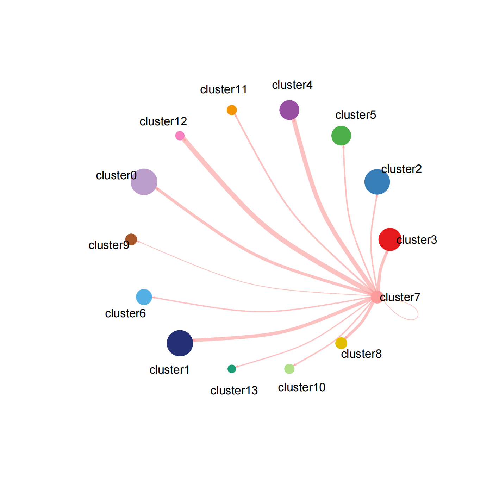
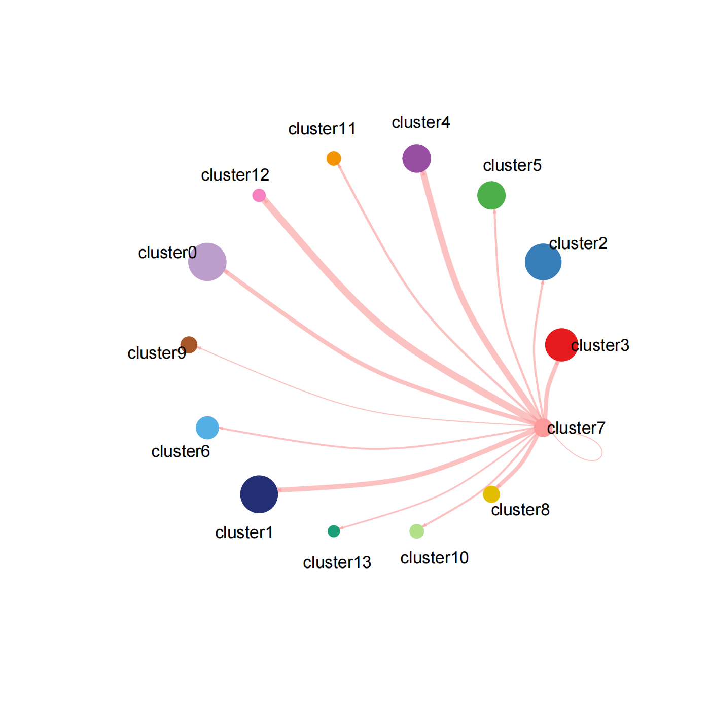

Methodology
In this project, we utilize multiple computational and experimental approaches, including single-cell RNA sequencing and machine learning techniques to analyze the relationship between gut microbiota and immune cell responses.
Sample R Code for Data Analysis
In lab, I need to receive data from different sources and process it with cellranger, then build R code to further cluster and analyze the data. The main data currently being processed comes from our lab's own patient/mouse data and PBMC data provided from Karolinska Institutet.
library(Seurat)
library(SeuratObject)
library(dplyr)
library(patchwork)
library(HGNChelper)
library(limma)
library(SeuratData)
library(openxlsx)
library(tidyverse)
library(writexl)
S2.data <- Read10X(data.dir = "/media/user/Elements/Data_Ye_Liu/scRNA/mouse/ZSG_cellranger/ZSG_cellranger_S2/outs/filtered_feature_bc_matrix")
S1.data <- Read10X(data.dir = "/media/user/Elements/Data_Ye_Liu/scRNA/mouse/ZSG_cellranger/ZSG_cellranger_S1/outs/filtered_feature_bc_matrix")
#S2
S2<-CreateSeuratObject(counts = S2.data,project = "mouse",min.cells = 3,min.features = 200)
S2[["percent.mt"]]<-PercentageFeatureSet(S2,pattern = "mt-")
S2<-subset(S2,subset = nFeature_RNA>200 & nFeature_RNA<4000 & percent.mt<10)
S2<-NormalizeData(S2, normalization.method = "LogNormalize", scale.factor = 10000)
S2<-FindVariableFeatures(S2,selection.method = "vst",nfeatures = 2000)
S2$Condition = "ZsG+"
all.genes <- rownames(S2)
S2 <- ScaleData(S2, features = all.genes)
S2 <- RunPCA(S2, features = VariableFeatures(object = S2))
S2 <- FindNeighbors(S2, dims = 1:10)
S2 <- FindClusters(S2, resolution = 0.5)
saveRDS(S2,"ZsG_pos")
#S1
S1<-CreateSeuratObject(counts = S1.data,project = "mouse",min.cells = 3,min.features = 200)
S1[["percent.mt"]]<-PercentageFeatureSet(S1,pattern = "mt-")
S1<-subset(S1,subset = nFeature_RNA>200 & nFeature_RNA<4000 & percent.mt<10)
S1<-NormalizeData(S1, normalization.method = "LogNormalize", scale.factor = 10000)
S1<-FindVariableFeatures(S1,selection.method = "vst",nfeatures = 2000)
S1$Condition = "ZsG-"
all.genes <- rownames(S1)
S1 <- ScaleData(S1, features = all.genes)
S1 <- RunPCA(S1, features = VariableFeatures(object = S1))
S1 <- FindNeighbors(S1, dims = 1:10)
S1 <- FindClusters(S1, resolution = 0.5)
saveRDS(S1,"ZsG_neg")
#Mouse DR3+ZsG+Tfh vs DR3+ ZsG-Tfh
##Extract positive DR3##
positive<-WhichCells(S2,expression= Tnfrsf25>0)
S2$exp<- ifelse(colnames(S2)%in% positive, "DR3+", "others")
Idents(S2) <- "exp"
Condition_gene<- paste(S2$Condition, "_",S2$exp)
names(Condition_gene) <- colnames(x = S2)
S2 <- AddMetaData(
object = S2,
metadata = Condition_gene,
col.name = 'Condition_gene'
)
Idents(S2)<-"Condition_gene"
table(S2$Condition_gene)
table(S2$exp)
head(S2)
# Subsetting the Seurat object where 'exp' column is "DR3+"
S2_DR3_pos <- subset(S2, subset = exp == "DR3+")
head(S2_DR3_pos)
saveRDS(S2_DR3_pos,"S2_DR3_positive")
##Extract positive DR3##
positive<-WhichCells(S1,expression= Tnfrsf25>0)
S1$exp<- ifelse(colnames(S1)%in% positive, "DR3+", "others")
Idents(S1) <- "exp"
Condition_gene<- paste(S1$Condition, "_",S1$exp)
names(Condition_gene) <- colnames(x = S1)
S1 <- AddMetaData(
object = S1,
metadata = Condition_gene,
col.name = 'Condition_gene'
)
Idents(S1)<-"Condition_gene"
table(S1$Condition_gene)
table(S1$exp)
head(S1)
# Subsetting the Seurat object where 'exp' column is "DR3+"
S1_DR3_pos <- subset(S1, subset = exp == "DR3+")
head(S1_DR3_pos)
saveRDS(S1_DR3_pos,"S1_DR3_positive")
##Extract negative DR3##
positive<-WhichCells(S1,expression= Tnfrsf25==0)
S1$exp<- ifelse(colnames(S1)%in% positive, "DR3-", "others")
Idents(S1) <- "exp"
Condition_gene<- paste(S1$Condition, "_",S1$exp)
names(Condition_gene) <- colnames(x = S1)
S1 <- AddMetaData(
object = S1,
metadata = Condition_gene,
col.name = 'Condition_gene'
)
Idents(S1)<-"Condition_gene"
table(S1$Condition_gene)
table(S1$exp)
head(S1)
# Subsetting the Seurat object where 'exp' column is "DR3+"
S1_DR3_neg <- subset(S1, subset = exp == "DR3-")
head(S1_DR3_neg)
saveRDS(S1_DR3_neg,"S1_DR3_negative")
S2_DR3_pos <- readRDS("S2_DR3_positive")
S1_DR3_pos <- readRDS("S1_DR3_positive")
# Merge DR3
obj.list<-list(S1_DR3_pos,S2_DR3_pos)
data.anchors<-FindIntegrationAnchors(obj.list, dims = 1:20)
M.dat<-IntegrateData(anchorset = data.anchors, dims = 1:20)
M.dat <- JoinLayers(M.dat,assay="RNA",layer="counts")
counts <- GetAssayData(M.dat, assay = "RNA",layer = "counts")
#creat a new seurat object
Tdat <- CreateSeuratObject(counts = counts,meta.data = M.dat@meta.data)
table(Tdat$Condition)
Tdat[["percent.mt"]]<- PercentageFeatureSet(Tdat, pattern = "^MT-")
Tdat <- subset(Tdat, subset= nFeature_RNA >200 & nFeature_RNA < 4000 & percent.mt <10)
Tdat <- NormalizeData(Tdat)
Tdat <- FindVariableFeatures(Tdat, selection.method = "vst", nFeature = 2000)
# Run PCA
all.genes <- rownames(Tdat)
Tdat <- ScaleData(Tdat, verbose = FALSE)
Tdat <- RunPCA(Tdat, npcs = 20, verbose = FALSE)
Tdat <- FindNeighbors(Tdat, reduction = "pca", dims = 1:20)
Tdat <- FindClusters(Tdat, resolution = 0.4)
saveRDS(Tdat,"ZsG+-_DR3+")
table(Tdat$Condition)
Idents(Tdat) <- "Condition"
b_markers <- FindMarkers(Tdat,
ident.1 = "ZsG+",
ident.2 = "ZsG-",
group.by ="Condition",
only.pos = FALSE)
b_markers
head(b_markers)
write.csv(x = b_markers, file = "DR3+_ZsG+-.csv")
S2 <- readRDS("ZsG_pos")
S1 <- readRDS("ZsG_neg")
#Mouse CD226+ZsG+Tfh vs CD22+6 ZsG-Tfh
##Extract positive CD226##
positive<-WhichCells(S2,expression= Cd226>0)
S2$exp<- ifelse(colnames(S2)%in% positive, "CD226+", "others")
Idents(S2) <- "exp"
Condition_gene<- paste(S2$Condition, "_",S2$exp)
names(Condition_gene) <- colnames(x = S2)
S2 <- AddMetaData(
object = S2,
metadata = Condition_gene,
col.name = 'Condition_gene'
)
Idents(S2)<-"Condition_gene"
table(S2$Condition_gene)
table(S2$exp)
head(S2)
# Subsetting the Seurat object where 'exp' column is "DR3+"
S2_CD226_pos <- subset(S2, subset = exp == "CD226+")
head(S2_CD226_pos)
saveRDS(S2_CD226_pos,"S2_CD226_positive")
##Extract positive CD226##
positive<-WhichCells(S1,expression= Cd226>0)
S1$exp<- ifelse(colnames(S1)%in% positive, "CD226+", "others")
Idents(S1) <- "exp"
Condition_gene<- paste(S1$Condition, "_",S1$exp)
names(Condition_gene) <- colnames(x = S1)
S1 <- AddMetaData(
object = S1,
metadata = Condition_gene,
col.name = 'Condition_gene'
)
Idents(S1)<-"Condition_gene"
table(S1$Condition_gene)
table(S1$exp)
head(S1)
# Subsetting the Seurat object where 'exp' column is "CD226+"
S1_CD226_pos <- subset(S1, subset = exp == "CD226+")
head(S1_CD226_pos)
saveRDS(S1_CD226_pos,"S1_CD226_positive")
# Merge CD226
obj.list<-list(S2_CD226_pos,S1_CD226_pos)
data.anchors<-FindIntegrationAnchors(obj.list, dims = 1:20,k.filter = 50)
M.dat<-IntegrateData(anchorset = data.anchors, dims = 1:20)
M.dat <- JoinLayers(M.dat,assay="RNA",layer="counts")
counts <- GetAssayData(M.dat, assay = "RNA",layer = "counts")
#creat a new seurat object
Tdat <- CreateSeuratObject(counts = counts,meta.data = M.dat@meta.data)
table(Tdat$Condition)
Tdat[["percent.mt"]]<- PercentageFeatureSet(Tdat, pattern = "^MT-")
Tdat <- subset(Tdat, subset= nFeature_RNA >200 & nFeature_RNA < 4000 & percent.mt <10)
Tdat <- NormalizeData(Tdat)
Tdat <- FindVariableFeatures(Tdat, selection.method = "vst", nFeature = 2000)
# Run PCA
all.genes <- rownames(Tdat)
Tdat <- ScaleData(Tdat, verbose = FALSE)
Tdat <- RunPCA(Tdat, npcs = 20, verbose = FALSE)
Tdat <- FindNeighbors(Tdat, reduction = "pca", dims = 1:20)
Tdat <- FindClusters(Tdat, resolution = 0.4)
saveRDS(Tdat,"ZsG+-_CD226_+-")
table(Tdat$Condition)
Idents(Tdat) <- "Condition"
b_markers <- FindMarkers(Tdat,
ident.1 = "ZsG+",
ident.2 = "ZsG-",
group.by ="Condition",
only.pos = FALSE)
b_markers
head(b_markers)
write.csv(x = b_markers, file = "ZsG_CD226.csv")
Sample R Code for NGS analysis
For raw sequencing data, I need to perform quality control, filtering and correction to remove low quality reads and sequencing errors.
BiocManager::install("clusterProfiler")
BiocManager::install("pathview")
BiocManager::install("enrichplot")
library(clusterProfiler)
library(enrichplot)
# we use ggplot2 to add x axis labels (ex: ridgeplot)
library(ggplot2)
# reading in data from deseq2
#drosphila_example_de
#ZsG+_ZsG-_osu.csv
df = read.csv("mouse_laurie_old_young_B.csv", header=TRUE)
df = read.csv("mouse_laurie_old_young_T.csv", header=TRUE)
df = read.csv("/media/user/Elements/Data_Ye_Liu/scRNA/signature/TCR.csv", header = FALSE)
# we want the log2 fold change
original_gene_list <- df$avg_log2FC
# name the vector
names(original_gene_list) <- toupper(df$X)
# omit any NA values
gene_list<-na.omit(original_gene_list)
# sort the list in decreasing order (required for clusterProfiler)
gene_list = sort(gene_list, decreasing = TRUE)
#org.Mm.eg.db
organism = "org.Mm.eg.db"
BiocManager::install(organism, character.only = TRUE)
library(organism, character.only = TRUE)
organism = "org.Hs.eg.db"
library(organism, character.only = TRUE)
gse <- gseGO(geneList=gene_list,
ont ="ALL",
keyType = "SYMBOL",
#nPerm = 10000,
minGSSize = 3,
maxGSSize = 800,
pvalueCutoff = 0.08,
verbose = TRUE,
OrgDb = organism,
pAdjustMethod = "none")
require(DOSE)
dotplot(gse, showCategory=10, split=".sign") + facet_grid(.~.sign)
pdf("pathway_mouse_laurie_old_young_T.pdf") #height = 14,width = 10
dotplot(gse, showCategory=10, split=".sign") + facet_grid(.~.sign)
dev.off()
# categorySize can be either 'pvalue' or 'geneNum'
cnetplot(gse, categorySize="pvalue", foldChange=gene_list, showCategory = 3)
pdf("GSEA_Cnetplot_Hs_GO.pdf") #height = 14,width = 10
cnetplot(gse, categorySize="pvalue", foldChange=gene_list, showCategory = 3)
dev.off()
Sample R Code for Heatmap analysis
With heatmap, professors and biology researchers can visualize the distribution of genes of interest in clusters
library(Seurat)
library(SeuratObject)
A1_HC.data <- Read10X(data.dir = "/media/user/Elements/OSU_A3_TO_A6/run_count_A1_HC/outs/filtered_feature_bc_matrix")
A3_HC.data <- Read10X(data.dir = "/media/user/Elements/OSU_A3_TO_A6/run_count_A3_HC/outs/filtered_feature_bc_matrix")
A4_RA.data <- Read10X(data.dir = "/media/user/Elements/OSU_A3_TO_A6/run_count_A4_RA/outs/filtered_feature_bc_matrix")
A5_HC.data <- Read10X(data.dir = "/media/user/Elements/OSU_A3_TO_A6/run_count_A5_HC/outs/filtered_feature_bc_matrix")
A6_RA.data <- Read10X(data.dir = "/media/user/Elements/OSU_A3_TO_A6/run_count_A6_RA/outs/filtered_feature_bc_matrix")
A1_HC.data
data1<-as.matrix(A3_HC.data)
read
gene <- read.csv("up_filtered_RA_vs_HC_alpha_beta_cd4.csv")
genelist <- as.array(gene$X)
rownames(data1)
sampleCell <- data1[rownames(data1) %in% genelist,]
attr(sampleCell,"type")<-"HC"
saveRDS(sampleCell,"HC3_matrix")
heatmap(sampleCell,main="RA vs HC alpha_beta_cd4 UP: RA4",scale="column")
mtext("RA", side = 1, line = 3, at = mean(par("usr")[1:2]), cex = 1.2)
pdf("heatmap_RA vs HC alpha_beta_cd4 UP_RA4.pdf",width=18,height=20)
heatmap(sampleCell,main="RA vs HC alpha_beta_cd4 UP: RA4",scale="column")
mtext("RA", side = 1, line = 3, at = mean(par("usr")[1:2]), cex = 1.2)
dev.off()
data1<-readRDS("HC_RA_osu")
gene_signature <- read.csv("/media/user/Elements/Data_Ye_Liu/scRNA/signature/TCR.csv", header = FALSE)

Sample R Code for Volcano Plot
In the experiments, the volcano diagram is one of the most used visualizations for analysis. With the volcano plot, I compared the significance performance of the group of interest and the control group for a given significance, and I also cross-compared the significance performance of different groups in different genes.
library(openxlsx)
library(EnhancedVolcano)
library(Seurat)
library(SeuratObject)
library(writexl)
getwd()
celltype <- unlist(read.csv("/media/user/Elements/Data_Ye_Liu/scRNA/signature/Th17.csv", header = FALSE))
celltype <- unlist(read.csv("/media/user/Elements/Data_Ye_Liu/scRNA/signature/Tfh.csv", header = FALSE))
celltype <- unlist(read.csv("/media/user/Elements/Data_Ye_Liu/scRNA/signature/TCR.csv", header = FALSE))
celltype <- unlist(read.csv("/media/user/Elements/Data_Ye_Liu/scRNA/signature/MOUSE_GOPB_T_Cell_Activation.csv", header = FALSE))
celltype <- unlist(read.csv("/media/user/Elements/Data_Ye_Liu/scRNA/signature/PP ZsGTfh+.csv", header = FALSE))
# Define the variable for single point of control
condition_variable <- "A4B7"
signature <- "PP ZsGTfh+"
celltype <- toupper(celltype)
# Load the data
#data1 <- read.csv(paste0("S2_", condition_variable, "_+-.csv"))
data1 <- read.csv("123456_RA_VS_HC.csv")
#data1 <- read.csv(paste0("RA_", condition_variable, "_+-.csv"))
# Subset data based on conditions
#up <- subset(data1, p_val < 0.05 & avg_log2FC > 0.58)
#down <- subset(data1, p_val < 0.05 & avg_log2FC < -0.58)
up <- subset(data1, avg_log2FC > 0)
down <- subset(data1, avg_log2FC < 0)
# Subset data based on cell types
sampleCell <- data1[toupper(data1$X) %in% celltype,]
#label_up <- subset(sampleCell, avg_log2FC > 0.58 & p_val < 0.05)
#label_down <- subset(sampleCell, avg_log2FC < (-0.58) & p_val < 0.05)
label_up <- subset(sampleCell, avg_log2FC > 0)
label_down <- subset(sampleCell, avg_log2FC < 0)
# Write data to Excel files
#write_xlsx(label_up, paste0("up_ ", condition_variable, "+ vs ", condition_variable, "- ",signature,".xlsx"))
#write_xlsx(label_down, paste0("down_ ", condition_variable, "+ vs ", condition_variable, "- ",signature,".xlsx"))
write_xlsx(label_up, paste0("up_ ", "RA vs HC",signature,".xlsx"))
write_xlsx(label_down, paste0("down_ ", "RA vs HC",signature,".xlsx"))
# Print the lengths of the subsets
cat("Number of down-regulated genes: ", length(label_down$X), "\n")
cat("Number of up-regulated genes: ", length(label_up$X), "\n")
# Create the plot
p2 <- ggplot(data = data1, aes(x = avg_log2FC, y = -log10(p_val))) +
geom_point(size = 3, colour = "grey") +
geom_point(data = down, size = 3, colour = "#66B2FF") +
geom_point(data = up, size = 3, colour = "#FF6666") +
geom_point(data = label_up, shape = 21, colour = "black", fill = "#FFFF99", size = 3.2, stroke = 1) +
geom_point(data = label_down, shape = 21, colour = "black", fill = "#FFFF99", size = 3.2, stroke = 1) +
#geom_vline(xintercept = c(-0.58, 0.58), col = "blue", linetype = 'dashed') +
#geom_hline(yintercept = 0.05, col = "black", linetype = 'dashed') +
annotate("text", x = 6, y = 25,label = paste("Number of up-regulated genes: ", length(label_up$X), "\n"), color = "blue")+
annotate("text", x = -6, y = 25,label = paste("Number of down-regulated genes: ", length(label_down$X), "\n"), color = "firebrick")+
scale_x_continuous(breaks = seq(-10, 10, 2)) +
labs(title = paste("RA ", condition_variable, "+ vs ", condition_variable, "- ",signature, sep = "")) +
#labs(title = paste("HC", " vs ", "RA", " ",signature, sep = "")) +
coord_cartesian(xlim = c(-10, 10), ylim = c(0, 100)) +
theme(
axis.text.x = element_text(size = 17),
axis.text.y = element_text(size = 17)
)
print(p2)
# Add labels to the plot
options(ggrepel.max.overlaps = 20)
text_label_up <- label_up[toupper(label_up$X) %in% celltype,]
text_label_down <- label_down[toupper(label_down$X) %in% celltype,]
p3 <- p2 +
geom_label_repel(
data = text_label_up,
aes(label = X),
size = 5,
color = "black",
arrow = arrow(length = unit(0.02, "npc"), type = "closed", ends = "last", angle = 15),
segment.size = 1
) +
geom_label_repel(
data = text_label_down,
aes(label = X),
size = 5,
color = "black",
arrow = arrow(length = unit(0.02, "npc"), type = "closed", ends = "last", angle = 15),
segment.size = 1
)
print(p3)
# Save the plot as PDF
#pdf(paste("ZsG+ ", condition_variable, "+ vs ", condition_variable, "- ",signature,".pdf", sep = ""), width = 18, height = 20)
#pdf(paste("Volin_ZsG+ vs ZsG- ", signature,".pdf", sep = ""))
pdf(paste("HC vs RA ", signature,".pdf", sep = ""),width = 18, height = 20)
#pdf(paste("RA ", condition_variable, "+ vs ", condition_variable, "- ",signature,".pdf", sep = ""), width = 18, height = 20)
print(p3)
dev.off()
Violin diagram analysis and Cell-Cell Communication
I produced violin plot analysis and Cell-Cell Communication to understand aspects of cell-cell interactions, gene expression distribution, and functional differences in cell types.
 
